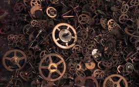

welcome

The Department of Mechanical Engineering is a prestigious and one of the most sought branches of engineering. The department has always strives to deliver quality education keeping with the various emerging trends. The College has proved its credibility and also the quality education imparted by it. The Department has at its disposal well equipped labs to provide hands on experience and to realize the practical aspect of theory learned. The Department has to its credit brilliant and dedicated engineers who have set benchmarks and proved themselves to be capable leaders in the ever evolving industry.
MECHANICAL graduates have a wide variety of professional options available to them. Some enter the practice of mechanical engineering, working for engineering firms or starting their own businesses; others work for city, state, or country governmental organizations, becoming city, state, or country engineers. There is ever growing demand for well educated and well trained MECHANICAL students all over the world.
mech laboratories
CAD/CAM Lab: Drafting: development of path drawings for various components. Part modeling: generation of various 3D models.
Instrumentation and Control systems Lab: Measurement of pressure, temperature, displacement, power, velocity, flow, torque, etc by using various measuring instruments.
Metrology & Machine tools Lab:Metrology: Measurement of lengths, heights, diameters by vernier calipers, micrometers, etc., Alignment of test on lathe & milling machine.
Machine tools: performing various operations on a general purpose machines like lathe, drilling machine, milling machine, shapper, planning machine, slotting machine, & surface grinder.
Thermal Engineering Lab: Performace test on 4-stroke diesel engines, 2-stroke petrol engines, heat balance of ic engines and finding efficiency of various engines.
Heat transfer Lab: Experiments on transient heat conduction, heat transfer coefficent in forced convection, natural convection.
Manufacturing Technology Lab: Casting:.Preparation of mouled cavity, melting materials, sand property testing. welding:. To perform various welding operations like arc welding, spot welding, TIG welding, etc.,
Fluid Mechanics & Hydrolic machines Lab: Determination of Reynolds number, flow through packed bit, flow through channels, flow through notches, flow through pipes and performance of reciprocating and centrifugal pumps.
Strength of materials Lab: To determine various strengths like compression, shear, impact,... Hardness testing, bending testing, etc.,
Material Science Lab: preparation & study of the micro strcture of pure metals like iron, copper, aluminium, & microstructure of steels.
Engineering workshop Lab: There is a need to equip the engineer with the knowledge of common & newer engineering materials as well as shop practices to fabricate, manufacture or work with materials.